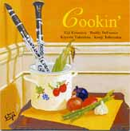
2005.07 河内スタヂオ録音
Cookin'
北村英治 & バディ・デフランコ北村英治 (cl) / Buddy DeFranco (cl) / 竹下清志 (p) / 遠山晃司 (b)
「河内スタヂオの台所を占領し、安心して食べてもらえる様にがんばった。」北村英治さん、ライナーノーツより
About the Album
作品紹介
「Cookin’」 JCCD-0011
巨匠デフランコとのダブルクラリネット
留まる処を知らないベテランのプレイ
北村英治（ｃｌ）,バディ・デフランコ(cl),
竹下清志(p) ,遠山晃司(b)
￥3,000(税込み）
お買い上げはこちら>>> 北村英治HP
引き出しの底に貼り付いた封筒の中から長年探していた写真が見つかった。1968年、ニューグレンミラーオーケストラを率いて来日したバディ デフランコ氏の楽屋を訪ね、初めて会った時の大切な写真である。私がクラリネット奏者で氏の大ファンである事を話すと、吹いてみろと云うので、バディ氏のレコードをコピーしたアドリブを吹いた。君がプロならコピーはやめて自分のプレイをする様にと教えられ、私は怒られた様な気がした。
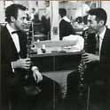
Phot by K.Abe
1982年単独で来日したバディ氏とヤマハホールで共演する機会が出来た。以前の事を覚えて居てコピーを捨てた私のプレイを喜んで呉れた。それ以来バディ デフランコとの交流が始まった訳である。日本でのコンサートツアー、シアトル、オーストラリアでのツアー、1993年のLAジャズパーティ、パリ、岡山、等と共演する機会が増えた。
バディ デフランコはジャズクラリネットがデキシーやスウイングのスタイルにしか通用しなかった1940年代にビーバップのスタイルを確立して、一つの方向を造り出した。1944年、トミー ドーシー オーケストラのオパス1でのソロはスウイングスタイルではあるが斬新なプレイで周囲を驚かせた。その後メトロノーム オールスターズのSP盤で新しい方向を示し、世界中のクラリネット吹きに衝撃を与えた。カウントベイシーのコンボではクラーク テリーやワーデル グレイとのセッションで大活躍をしていた。絶えず前進を続け、高い評価を受け、ダウンビートやメトロノームの人気投票でも「キング オブ スウイング」のベニー グッドマンを抜いてNo.1になり現在までその地位を保って居る事は見事である。1923年生まれ、今、82才になった訳だが、現在でも前進して居てそのプレイが輝いて居るのは驚きである。バディのプレイを聴いて居ると、その緻密さの為か、かなりムヅカシイ人の様に思うかも知れないが、実際にはとても優しい、素晴らしい人格の持ち主である。1985年日本国内ツアーでの事、大好物のアップルパイを食べたくて注文した。「日本風のピッツアパイの様に薄いパイ」を見て実に悲しそうな顔をしたが仕方なく食べて居た。それを見た私のファンクラブの人がアメリカ風の5～6センチも厚みのあるデカイ アップルパイを焼いて持って来て呉れた。バディはそれを見て大喜び。「今、こんなに食べられないよ、4分の1で充分だよ・・・残りは冷蔵庫でとって置いて明日また食べよう。」と子供の様にはしゃいで居た。バディは食べ物のアレルギーを持って居て、牛肉、エビ、レタス等を食べられないのでツアー中はもっぱら私が食料調達係りになる。外国のツアーではコンドミニアムに泊まり、私が料理すると喜んで食べて呉れた。実はこのレコーディングでも、バディのアレルギーを知って居る私が河内スタヂオの台所を占領し、安心して食べてもらえる様にがんばった。「エイジの料理は最高だ。」と誉めてもらえたが・・・クラリネットの方はどうだったか？
話の順番が逆になってしまったが、このレコーディングのいきさつについて書き留めたい。インターナショナル クラリネット ソサエティ（ICS）の大会が、2005年初めて日本で開催される事になりバディ デフランコとエディ ダニエルスを招聘する話が持ち上がった。私は「1986年シアトル」と「1996年パリ」のICS大会に参加しバディと共演させて貰っていたので、「ジャズ界の宝物」であるバディ デフランコ氏はこの大会には欠かす事の出来ない巨匠であると主張し、バディに電話して出演の承諾を貰った。そして来日の機会に私の夢であったレコーディングをしたいとを申し出た。
日本ではあまり聴くチャンスのないバディ デフランコの演奏を出来るだけ多くの方に聴いてほしいと思って居る。私のクラリネットとは対照的にビーバップの味をふんだんに取り込んだプレイは聞き応えがある。
ピアノの竹下清志は大阪教育大学特音ピアノ科卒業で、クラシックからジャズまで幅広いジャンルをこなし、私との共演の機会も多い。決して出しゃばらずにバディのプレイを心地よくサポートし、それで居て自身の音楽性を見事に表現する素晴らしいピアニストである。
大ベテランのベーシスト遠山晃司は八城一夫時代からの付き合いで、高度な音楽性と際立った感性を持ち、何時でも何処でも最高のプレイで支えて呉れる。1982年来日したバディ デフランコとのヤマハホールでのコンサートにも参加して貰っていたので、このレコーディングで旧交を温めた。
終戦後間もなくFENラヂオでバディ デフランコを聴き、憧れて憧れて、1968年初めて会ってマネをするなと諭された時の黒い頭髪が37年経って白くなったけれど、共演しレコーディング出来た事が嬉しくて、ちょっと得意になって皆に聴いて貰いたい。
北村英治
Recording Report
レコーディングレポート
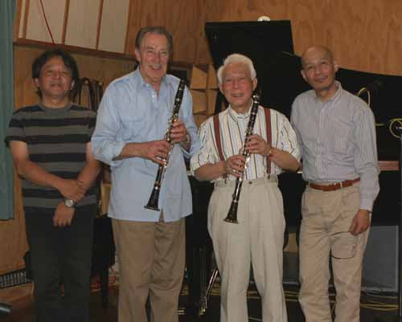
今年のレコーディングはなんとクラリネットの巨匠バディ・デフランコさん
バーブのレコード(CD)でCOOKING THE BLUES という名盤があります。
私の大好きなアルバムでなんとピアノがSonny Clark 、ギターが Tal Farlow が参加していてバディさんはモダンなスタイルですばらしい演奏を聴かせてくれます。
クラリネットではもちろんアメリカのjazz界で巨匠とよぶにふさわしい方です。
その上になんと北村さんでさえ「神様」と言っておらるのです。そんな方を録音させて頂けるチャンスを下さった北村さんに感謝しなければいけないと思いました。
またとても高齢（８２歳）なのでゆっくりくつろぎながら録音したいと北村さんは考えられたのだろう、ゆったりくつろぎながら録音をしてもらうのなら自信がある。
そういうわけでうちでやらせてもらったのですが結構プレッシャーを感じてしまいました。
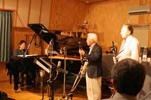
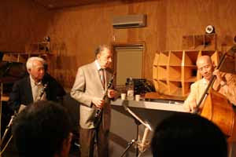
今回バックをつとめるのはピアノは大阪で活躍されている竹下清志さん、ベースはうちでの録音２回目の遠山さんです。
初日はレコーディングというより私の友人やジャズファンを招いてミニライブを行い明日の録音の練習？をさせてもらいました。
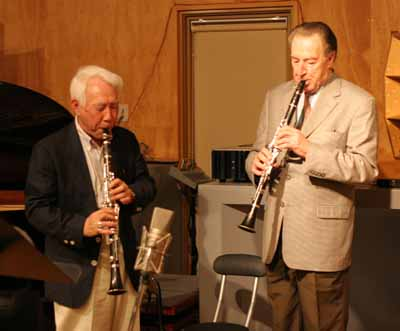
これが私にとってすごくありがたいのです、発表しない録音というのはプレッシャーがかからないのでありがたい。生音もチェックして明日の録音にむかえるし、この日は大盛り上がりであっという間に終了してしまいました。
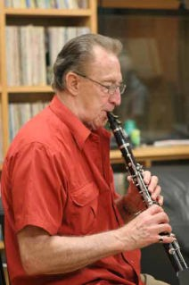
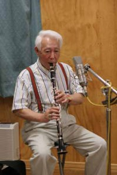
北村さんとバディさんの音は同じメーカーのクラリネットなのに吹きかたとかリードとかが違うのでずいぶん違って聞こえました、言葉で表現するのは難しいですが、北村さんは柔らかくウオームな？音、一方バディさんは北村さんより少しブライトな音という感じでした、録音は左側に北村さん右側にバディさんとなってますので音の違いを楽しんで下さい。
バディさんの演奏はとても８２歳とは思えない５０年代のテクニックが少しも衰えて無いという感じでびっくりしました。
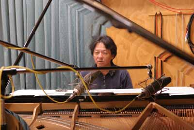
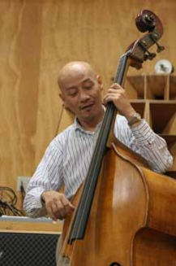
録音はピアノを中心にみんなで取り囲むように配置して演奏してもらいました、今回初めての録音の竹下清志さんはとってもテクニカルでその上きれいないい音でBoston を弾いてくださいました、この後急遽ピアノをSteinway に変えてしまったので最後のBoston をいい音で残してくださった竹下さんに感謝です。
ベースの遠山さんはいつものまるくて太い音で包み込んでくれました。
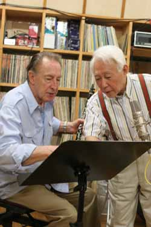
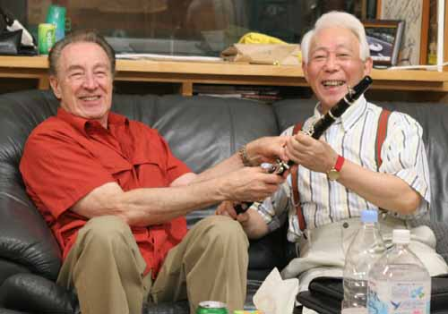
録音は２日間でCD２枚分も作れるほど多くの曲をわずか数テイクで録ってしまいました。
北村英治ホームページ